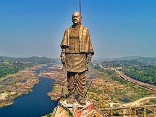
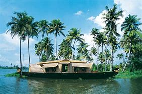

Home||Popular Destination||Spiritual Capital||Heritage Sites||Serene Beaches||
| Destination | Details |
|---|---|
| Statue Of Unity | The Statue of Unity is a statue of Indian statesman and independence activist Vallabhbhai Patel (1875–1950), who was the first deputy prime minister and home minister of independent India and an adherent of Mahatma Gandhi. Patel was highly respected for his leadership in uniting 562 princely states of India with a major part of the former British Raj to form the single Union of India. |
| Taj Mahal | The Taj Mahal 'Crown of the Palace', is an ivory-white marble mausoleum on the right bank of the river Yamuna in the Indian city of Agra. It was commissioned in 1632 by the Mughal emperor Shah Jahan to house the tomb of his favourite wife, Mumtaz Mahal; it also houses the tomb of Shah Jahan himself. The tomb is the centrepiece of a 17-hectare complex, which includes a mosque and a guest house, and is set in formal gardens bounded on three sides by a crenellated wall. |
| Jaisalmer | Jaisalmer audio speaker iconpronunciation (help·info), nicknamed "The Golden city", is a city in the Indian state of Rajasthan, located 575 kilometres (357 mi) west of the state capital Jaipur. The town stands on a ridge of yellowish sandstone and is crowned by the ancient Jaisalmer Fort. This fort contains a royal palace and several ornate Jain temples. Many of the houses and temples of both the fort and of the town below are built of finely sculptured sandstone. The town lies in the heart of the Thar Desert (the Great Indian Desert) and has a population, including the residents of the fort, of about 78,000. It is the administrative headquarters of Jaisalmer District. Jaisalmer was once the capital of Jaisalmer State |
| Kerala | Kerala is a state on the Malabar Coast of India. It was formed on 1 November 1956, following the passage of the States Reorganisation Act, by combining Malayalam-speaking regions of the erstwhile regions of Cochin, Malabar, South Canara, and Travancore. |
| Kashmir Valley | The Kashmir Valley, also known as the Vale of Kashmir, is an intermontane valley in Kashmir. It is in a region occupied by India as the union territory of Jammu and Kashmir, which has been the subject of a dispute between India and Pakistan. The valley is bounded on the southwest by the Pir Panjal Range and on the northeast by the main Himalayasrange |